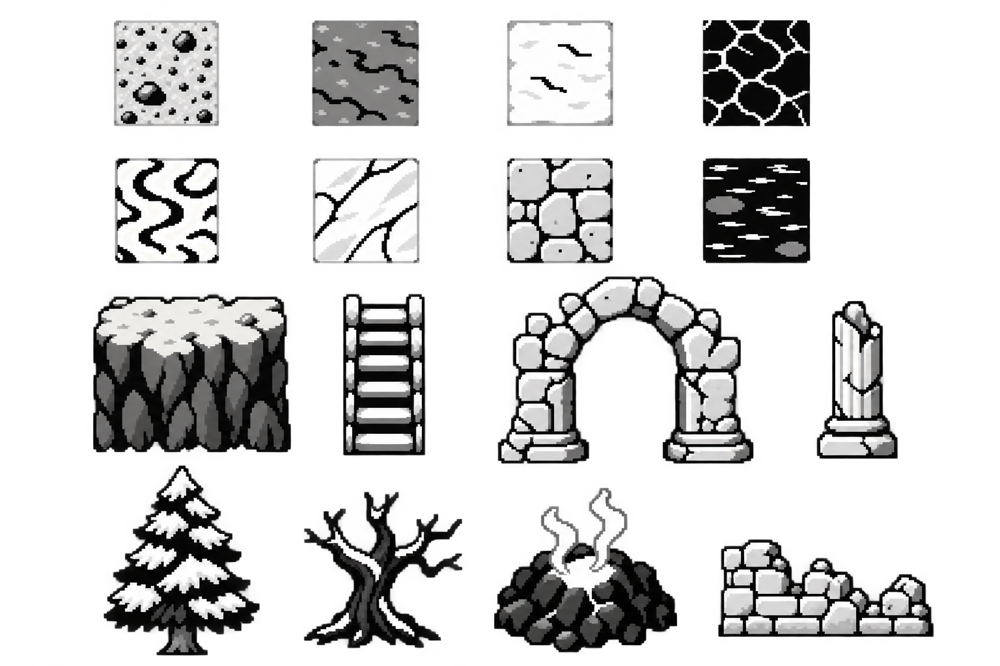

Five new regions lead the fresh kit: mountain pass, marsh, ancient ruins, snowy highlands and volcanic badlands. Modern cities, coast, desert and the earlier studies follow. All views use the 128×64 viewport, across three art directions and three monochrome texture treatments.
Each round has its own fresh generated art. Existing spikes helped identify the viewport and grid constraints; their artwork was not used as a visual reference.
Fresh kit · five new biomes
A world kit built around the player
One 295-tile kit builds all fifteen camera studies. New cliff faces, stairs, boardwalks, arches, columns, snow-capped pines and steam vents join the existing city, coast and desert pieces. Connected terrain tiles form mountain trails, marsh banks, frozen ponds and lava channels. Every view is a 128×64 crop of one layered 96×60 world, with the current 16×16 player drawn at (56,24).
Each area shows all nine combinations at once: Soft blocks, Ink silhouettes and Stepped etching in columns; clean, light and heavy textures in rows. Clean clears gray shadows, light uses 25% black pixels, and heavy uses 50%. Black contours stay fixed.
The shared world
Orange boxes mark the fifteen camera crops. Mountain terraces and snowy highlands extend the eastern edge; marsh, ruins and volcanic terrain fill the southern row. Repeated cliff blocks form long ledges, pairs of stair tiles create wide ascents, and pier pieces become marsh boardwalks. Tower floors, palms and shoreline pieces remain shared across their earlier regions.
Mountain, marsh, ruins, snow and volcano sprite source

Round 1 · scene-led composition
Concept directions at the device viewport
This first pass starts from complete location concepts, reduced into the same 128×64 frame. It explores composition and grayscale character before the tilemap-focused second pass below.
View the selected scene-concept sourceRound 2 · assembled from a reusable tileset
Viewport examples from the same kit
Each row uses the same map tile IDs in all three columns. Select a direction to switch the atlas source and a dithering treatment to change its atlas preview and Tiled export. The image files remain native 128×64; they are displayed at 2× nearest-neighbor for inspection.
One connected world
The cave, forest, rural town and city are joined as a 16×8 tile map (256×128 pixels). The thin center guides split it into four 128×64 camera windows. The map uses the same atlas and tile IDs as the viewport studies; the downloadable Tiled map has no baked viewport guides or player sprite.
Each style and dither treatment has its own matching atlas and Tiled tileset. Tile IDs are stable across all versions.
Tile families · eight shared rows organize the world kit.
IDs
Family
0–7
Base ground and terrain
8–15
Paths, corners and junctions
16–23
Trees, shrubs and forest props
24–31
Cave walls, floor and minerals
32–39
Cottage pieces, fences and gardens
40–47
Shops, street edges and lighting
48–55
Water, banks and crossings
56–63
Shared landmarks and props
Tile names and IDs are in the manifest and in each Tiled tileset. These are exploratory pieces for world assembly, not installed game graphics.
Selected direction · all views and texture treatments
Rows are cave, forest, rural town and city; columns are clean, light and heavy dithering. Each is a nearest-neighbor 2× enlargement of its native framebuffer.
View the generated grayscale atlas source
These independent 8×8 source sheets establish three treatments from the same family layout. Guides are cropped while slicing; the stored source remains unchanged.